À propos
Passionné par l'informatique, particulièrement tout ce qui touche au réseau informatique, je suis actuellement en B.U.T. 2 informatique à l'IUT Nancy-Charlemagne. Une vision de moi : Projet Ikigai.

Parcours
- 2026 : B.U.T. 2 en informatique à l'I.U.T Nancy Charlemagne
- 2025 : B.U.T. 1 en informatique à l'I.U.T Nancy Charlemagne
- 2024 : Obtention du Baccalauréat
Projets récents
- Portfolio : Développement de mon site personnel (HTML, CSS).
- Mon Web Portrait : Mon profil dans un monde numérique Projet GitHub.
- Projet Monster : Application web interactive en JavaScript Projet GitHub.
- Sokoban : Création d'un jeu de réflexion respectant les bonnes pratiques de code Projet GitHub.
- Zeldiablo : Jeu développé en équipe par itérations successives en Java Projet GitHub.
Contact

Email : thomas.delvaux8@etu.univ-lorraine.frCopié dans le presse-papier !
GitHub : Mon profil GitHub